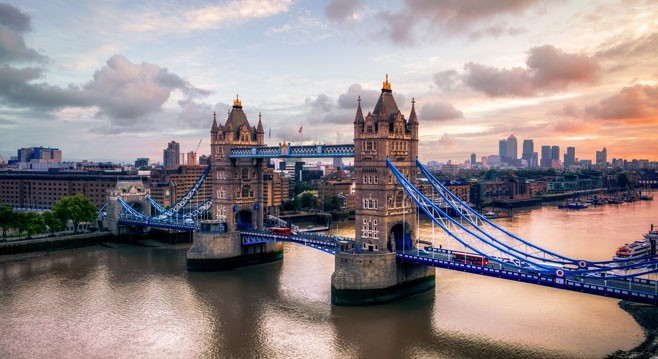

Das sind meine Lieblingsstädte:
London is the capital city of England.
It is the most populous city in the United Kingdom, with a metropolitan area of over 13 million inhabitants.
Paris is the capital of France.
The Paris area is one of the largest population centers in Europe, with more than 12 million inhabitants.
Tokyo is the capital of Japan.
It is the center of the Greater Tokyo Area, and the most populous metropolitan area in the world.
The City of New York is the most populous city in the United States.
New York is an important center for international diplomacy and has been described as the cultural and financial capital of the world.